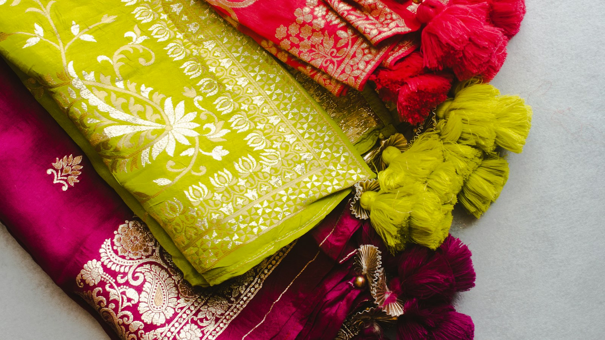
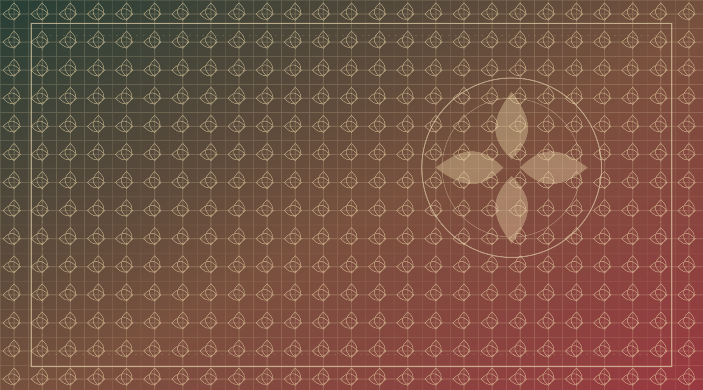

Premium Quality
Carefully selected sarees and textiles with quality in mind.

New Collection 2026
Discover thoughtfully selected sarees, fabrics and fashion for celebrations, everyday wear and every moment in between.
A little colour. A lot of tradition.
A world of texture
A little something special
Discover elegant styles for every occasion.
Up to 20% OFF selected sareesShop offers Selected sarees · Offer shown on eligible piecesThoughtfully selected
Explore sarees, textiles and fashion chosen for the moments that matter.
The Super Tex difference
Thoughtful service and beautiful finds, from first browse to delivery.
Carefully selected sarees and textiles with quality in mind.
Explore sarees, fabrics and fashion for different tastes and occasions.
Friendly help when you need a hand choosing the right piece.
Complimentary delivery on orders over Rs. 5,000.

Super Tex · MataraA little about us
Super Tex is a saree and textile shop in Matara, bringing together a wide range of sarees and fabrics for different styles and occasions.
From weddings and festivals to everyday wear, we focus on quality and offer friendly help to make finding your next favourite piece a little easier.
Learn moreKind words, kept close
Sample testimonials for this website preview.
“The colours were lovely, and I found just the right saree for a family celebration.”
“A beautiful range of fabrics and such a friendly experience from start to finish.”
“I was looking for something comfortable for everyday wear and found a lovely option.”
We'd love to hear from you
Get in touch for styling help, gift ideas, or a chat about beautiful fabrics.
Hotline: 077266277, 0772266287
Email: hello@supertex.lk
Visit us: No. 57/B, Kumarathunga Mawatha, Matara